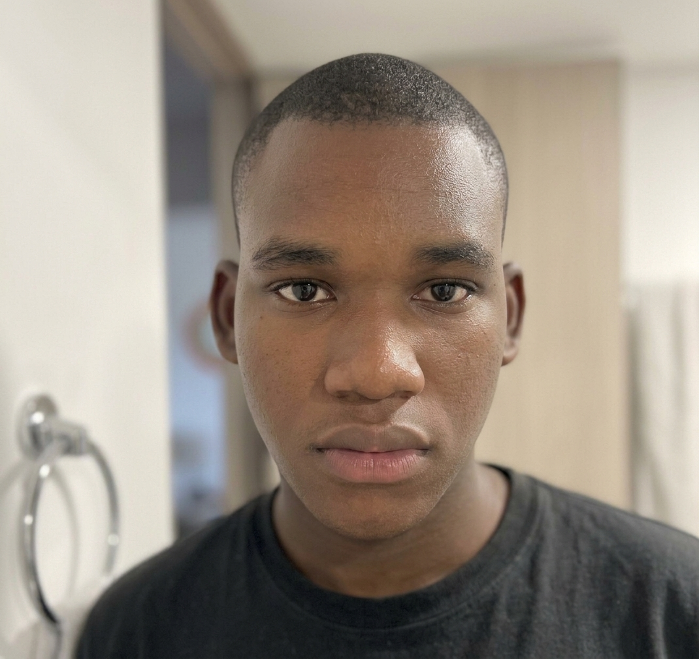
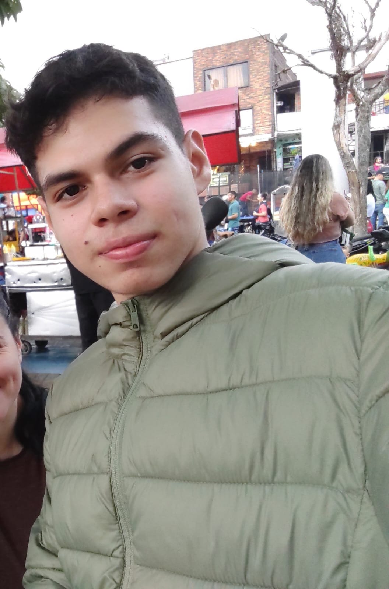
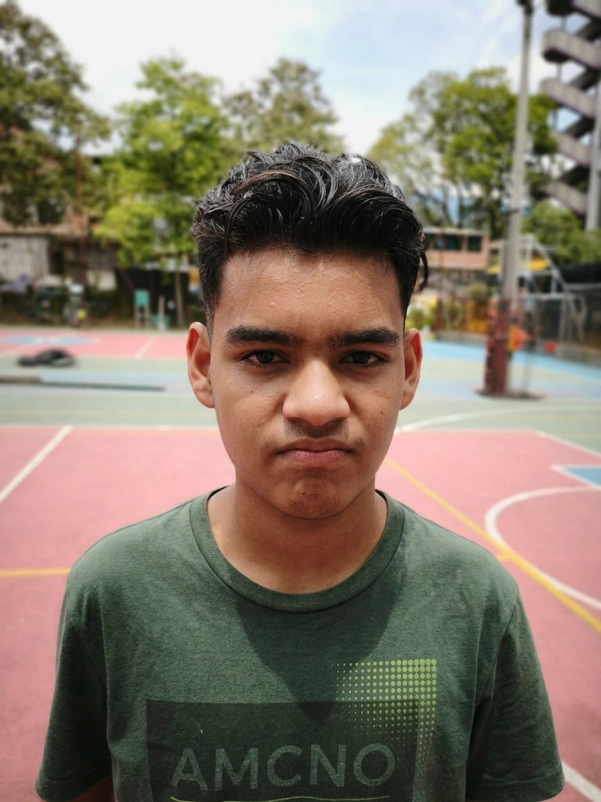

¿Quienes somos?
Somos una tienda dedicada a la venta de camisetas oversize, creada con el propósito de ofrecer diseños cómodos y modernos
para jóvenes que buscan expresar su personalidad a través de su estilo.
Misión
Ofrecer camisetas oversize de buena calidad, cómodas y con diseños modernos, brindando una
experiencia agradable a nuestros clientes.
Visión
Ser una marca reconocida por nuestras camisetas oversize, destacándonos por nuestros diseños, calidad
y atención al cliente.
valores corporativos
- Responsabilidad
- Respeto
- Creatividad
- Calidad
- Compromiso
nuestro equipo
Nuestro equipo está conformado por Josué, Esneider y Emanuel, tres jóvenes que trabajan juntos para crear y desarrollar JSE Oversize.
Cada integrante aporta sus ideas, creatividad y compromiso para que la tienda pueda ofrecer un estilo moderno, cómodo y diferente.
Josué: se encarga de realizar y organizar los documentos relacionados con el proyecto.

Emanuel: se encarga principalmente del funcionamiento de la tienda y del desarrollo de la página web.

Esneider: apoya a Emanuel en el funcionamiento y desarrollo de la tienda,
colaborando en las diferentes actividades del proyecto.
